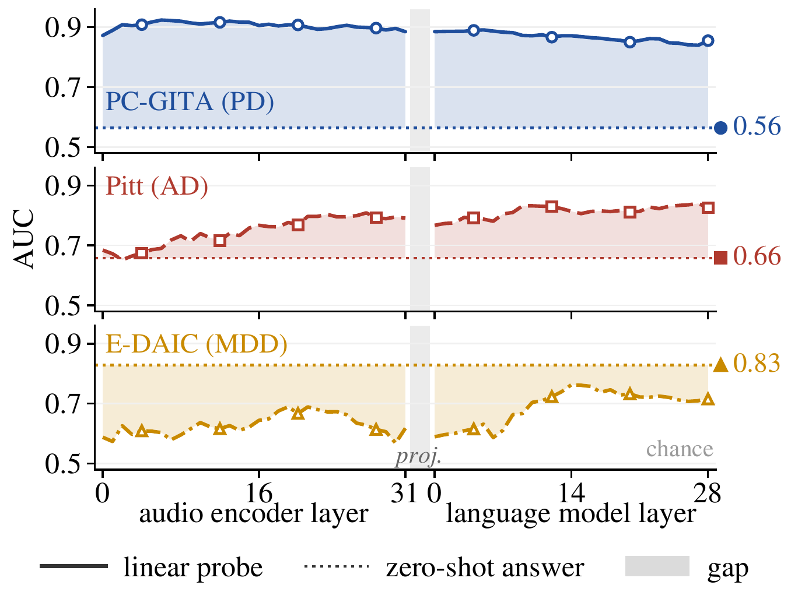

Every score on this page is AUC. 0.5 is chance and 1.0 is perfect. Intervals are 95 percent, from resampling speakers.
On Parkinson's and Alzheimer's speech, the model knows more than it says
Qwen2.5-Omni's own audio encoder holds more of the diagnosis than its answer shows. We trained a linear probe on the encoder and asked the model a yes or no question about the same clips. The probe reads 0.75 to 0.92 AUC. The answers sit at 0.56 to 0.71. The widest gap is on PC-GITA read speech, 0.89 against 0.56.
On Pitt, the Alzheimer's picture descriptions, the gap is 0.11, and its 95 percent interval, 0.05 to 0.18, stays above zero. On MDVR-KCL, with 37 speakers, the two are too close to call. A plain acoustic baseline, eGeMAPS, scores above the answer on PC-GITA, NeuroVoz, ADReSSo and ADReSS-2020, level with it on Pitt, and too close to call on MDVR-KCL. We did not compute intervals for these baseline comparisons.
On PC-GITA the probe is not just hearing the microphone. After we normalised loudness and noise floor, recording features alone fell to 0.56, and the probe still read 0.83 against an answer of 0.57. Qwen3-Omni shows the same gap on PC-GITA, 0.90 against 0.60.
Show the numbers
The signal reaches the answer, but the Yes or No readout uses only part of it
The diagnosis is readable at almost every depth of the model, including the spot where the answer is made. We probed all 61 stages of Qwen2.5-Omni: 32 in the audio encoder and 29 in the language model, at the audio token positions. On PC-GITA every stage reads far above the answer. On Pitt the signal grows through the encoder and stays high in the language model, where the probe reaches 0.80.
At the answer position, a probe on the final hidden state still reads 0.77. The model turns that same vector into Yes or No along one direction. Along that direction the two groups separate at only 0.66, the level of the answer itself. So the information is there when the answer is made, and the Yes or No readout picks up only part of it. Depression is the odd one out, covered next.

On depression interviews (first 300 s), the answer beats every probe
Depression runs the other way. On E-DAIC interviews the answer reaches 0.83, while the encoder probe reads 0.59 and the language model probe 0.70. Both paired intervals stay below zero. The words seem to carry this task. Given only the whole transcript, the same model scores 0.82.
We meant to feed each participant's full speech, but the model's audio processor kept only the first 300 seconds. So we lifted the cut and let the model hear up to 15 minutes. The answer moved from 0.83 to 0.84, a change of 0.01 that is within noise. The encoder probe barely moved, from 0.59 to 0.60, and the language model probe rose to 0.74, still below the answer. A probe at the answer position caught up, at 0.84.
Two models that keep longer audio, Qwen3-Omni and Audio Flamingo 3, reach 0.87 and 0.86. With 275 speakers, the probes may simply be short of data.
Show the numbers
When the words point the wrong way, four of six models follow the words
On depression, most of the models we tested follow the words when the words and the diagnosis disagree. We built pairs from real E-DAIC interviews. In a conflict segment the words point away from the label, like a depressed participant speaking positively. Its partner, from the same person, has words that point toward the label. A listening model should score about the same on both.
Four of six models fall below chance on the conflict segments, with intervals entirely under 0.5. Qwen2.5-Omni drops from 0.96 to 0.22. Every model except Audio Flamingo 2 scores above 0.80 when words and label agree. From the transcript alone, Qwen2.5-Omni gives 0.15 and 0.96.
The drop holds under two other prompt wordings and two other sentiment cut points. With a second sentiment model the conflict arm sits at chance, 0.46, not below it. So the words are enough to explain the answers, though this does not prove the voice is ignored.
Show the numbers
On Alzheimer's speech the words matter too, and so does the interviewer
On Pitt picture descriptions the models also lean on the words, but less sharply. We split segments by how fluent the transcript reads. Here the two arms are not matched speaker by speaker, so this test is weaker than the depression one.
The three Qwen models drop by 0.17 to 0.29 from agreement to conflict, but none falls below chance. Kimi-Audio shows no drop, and the two Audio Flamingo models score 0.53 to 0.61 on both arms. The transcript alone shows the same pattern, 0.56 against 0.71, so the words explain much of it.
The Pitt clips also hold some interviewer speech. When we cut it out, Qwen2.5-Omni's answer rose from 0.66 to 0.72, while the encoder probe barely moved, from 0.77 to 0.76. So on the participant's own voice, the Pitt gap is smaller than on the original clips. Kimi-Audio's steady score also leaned on the interviewer. Without it, its agreement arm fell to 0.56.
Qwen2.5-Omni on Pitt, with and without the interviewer
Show the numbers
Retraining one small layer lifts the scores, but not where the words mislead
A little training raises the Parkinson's and Alzheimer's answers. On Pitt, where we can check, the gain comes where the words already help. We retrained only the projector, the small layer that hands audio features to the language model, and scored every clip on held-out speakers.
On five of the six Parkinson's and Alzheimer's sets the answer went up, from +0.11 on Pitt to +0.32 on PC-GITA, with intervals above zero. MDVR-KCL did not move. These are one run each. On Pitt we ran the same recipe seven times in all and got 0.74 to 0.81. In every run the conflict segments stayed at chance, 0.45 to 0.57, while the agreement segments rose to 0.82 to 0.90.
On depression no run beat the zero-shot answer, and the runs moved a lot: 0.64, 0.81 and 0.79, against answers of 0.83 and 0.84. The runs did not hear the same audio. The 0.64 run heard only the first 30 s of each window. The other two heard the first 300 s and up to 15 min.
Pitt, seven fine-tune runs, by segment type
Show the numbers
What did not survive
We checked every claim in the paper against the result files. These did not hold up, or held up only in a weaker form.
- The whole interview. The paper says the model heard each participant's whole interview. It heard the first 300 seconds, because its audio processor cut the rest. With the cut lifted the answer is 0.84 instead of 0.83, so the finding holds, but the sentence was wrong.
- A fine-tuning gain on depression. The paper's conclusion claims one. No run showed it. Our E-DAIC runs gave 0.64, 0.81 and 0.79, against zero-shot answers of 0.83 and 0.84. The 0.64 run, the one in the paper, heard only the first 30 s of each window. So it cannot be compared with the 300 s answer. The other two heard the first 300 s and up to 15 min. The 0.64 run also cannot be rerun as it was made. It saved no checkpoint, and its training audio was not kept.
- The gap shrinking as the words carry more of the diagnosis. The seven gaps do not line up in that order. Only depression reverses.
- Paired Pitt arms. The Pitt conflict and agreement segments come from overlapping but different groups of speakers, so the Pitt test is weaker than the depression one.
- Below chance on every test. Four of six models fall below chance on the depression pairs only. On Pitt none does, and a second sentiment model puts the depression conflict arm at chance (0.46), not below it.
- Numbers with no file behind them. The speaking-rate figure of 0.92 has no result file. Neither does the share of Pitt words heard inside the 30 second window. Most Pitt segments run longer than the 30 seconds the models hear. The paper still prints both numbers. They should come out, and they stay off this page.
- Counts and bases that were off. The 488 depression conflict segments make 483 pairs with 311 distinct agreement segments. The Audio Flamingo 3 agreement score is 0.84, not 0.81. The PC-GITA gap is 0.33 on the paper's own probe, not 0.35. Audio Flamingo 2 heard longer Pitt clips than the other models. On the same 30 seconds it scores 0.58 and 0.53.
- The cosine test for the readout. The angle between the probe direction and the Yes or No direction is near random. But in a space this large, two unrelated directions always look like that. So the test could not have failed. We keep the plainer result that the readout direction separates the Pitt groups at only 0.66.
- The NeuroVoz channel check. Normalising loudness and noise floor did not bring the recording features below our own 0.60 bar on NeuroVoz, and the probe fell from 0.92 to 0.89. PC-GITA passed. On NeuroVoz a recording channel effect is not ruled out.
- The Pitt age-matched numbers. Two joins of the same matched list give different clip counts and probe values. Until one is chosen, they stay off this page.
Data and privacy
This page shows only aggregate numbers: AUCs, intervals and counts. It holds no audio, no transcripts, no speaker ids and no per-clip scores. Each dataset (PC-GITA, NeuroVoz, MDVR-KCL, DementiaBank Pitt, ADReSSo, ADReSS-2020 and E-DAIC) comes with its own licence or data-use agreement, so please request it from its owners.